= 15种不同的位置。同理，含有3个2的序列还必须包含2个1，共有5个数字，这样的序列有
= 15种不同的位置。同理，含有3个2的序列还必须包含2个1，共有5个数字，这样的序列有到目前为止，我们已经讨论了斐波那契数列的若干规律，但也只能算点到为止。你也许会想，这些数字的作用肯定不限于计算有多少对兔子吧。的确，斐波那契数列是很多计数问题的答案。1150年（比萨的利奥纳多还没有开始研究那些兔子呢），印度数学家赫马查德拉问，如果音乐的终止式只包含长度为1或2的音节，那么长度为n的终止式共有多少种呢？我们用简单的数学语言来表述这个问题。
问题：如果把数字n写成1与2的和的形式，一共有多少种写法？
我们把答案记作fn，然后考虑n取较小值时fn的值。
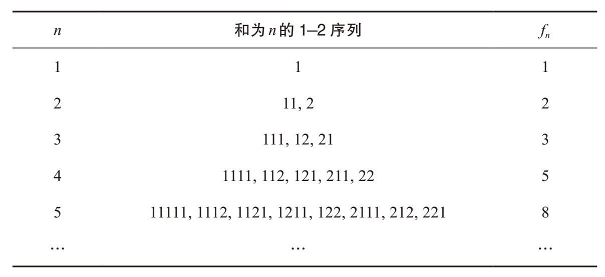
和为1的情况只有一种，和为2有两种情况（1 + 1和2），和为3有三种情况（1 + 1+ 1, 1 + 2，2 + 1）。注意，只可以使用1和2这两个数字。此外，数字的先后次序是需要考虑的重要因素，因此1 + 2与2 + 1不同。和为4有5种情况（1 + 1 + 1 + 1, 1 + 1 + 2, 1 + 2 + 1, 2 + 1 + 1, 2 + 2），上表中给出的答案似乎都是斐波那契数列中的数字，事实也确实如此。
我们以f5 = 8为例，看看和为5的情况为什么有8种。求和时，第1项只能是1或者2。第1项是1的情况一共有多少种呢？在1之后，我们必须再给出一系列的1和2，而且这些数之和等于4。我们知道，这样的序列共有f4 = 5种。同理，第1项是2且各项之和是5的情况共有多少种呢？在第一个数字2之后，剩余各项之和必须是3，一共有f3 = 3种情况。因此，和为5的情况一共有5 + 3 = 8种。同理，和为6的序列一共有13种，因为第1项数字是1的情况共有f5 = 8种，第1项数字是2的情况共有f4 = 5种。一般而言，和为n的序列共有fn种，其中，以1开始的序列有fn–1种，以2开始的序列有fn–2种，因此：
fn = fn–1 + fn–2
也就是说，fn的前几个数字与斐波那契数列相似，随后各项的增长方式也与斐波那契数列相似。因此，这些数字构成的就是斐波那契数列，不过两者之间还存在一个小差异，或者更准确地说是发生了位移。请注意，f1 = 1 = F2，f2= 2 = F3，f3 = 3 = F4，以此类推。（为方便起见，我们定义f0 = F1 = 1，f–1 = F0 = 0。）一般而言，对于n≥1，有：
fn = Fn+1
了解斐波那契数列的应用价值之后，我们可以利用这方面的知识，对它的很多美丽的规律加以证明。大家还记得我们在第4章结尾部分讨论的帕斯卡三角形的对角线方向的数字之和吧。
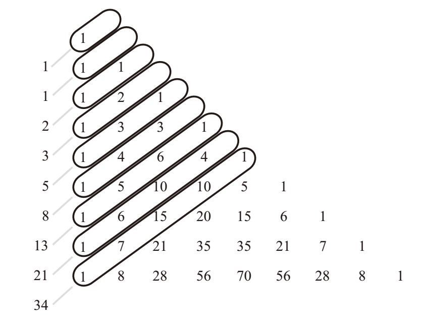
例如，第8条对角线方向的数字之和是：
1 + 7 + 15 + 10 + 1 = 34 = F9
如果表述成“n选几”的形式，就是：
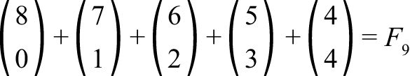
为了帮助大家理解这个规律，我们用两个办法来解决下面这个计数问题。
问题：和为8的1–2序列有多少种？
第一种方法：根据定义，有f8 = F9种。
第二种方法：根据序列中2的个数，把这个问题分成5种情况加以考虑。
没有2的序列有多少种？显然只有1种，即11111111，毫无疑问
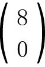
= 1。只有1个2的序列有多少种？有7种，即2111111，1211111，1121111，1112111，1111211，1111121，1111112。这些序列包含7个数字，数字2在其中有
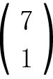
= 7种不同的位置。有2个2的序列有多少种？符合这个条件的代表性序列是221111，我在这里就不一一列出全部15种序列了。提醒大家注意一点：符合条件的序列都有2个2和4个1，共包含6个数。因此，2个2在这些序列中一共有 = 15种不同的位置。同理，含有3个2的序列还必须包含2个1，共有5个数字，这样的序列有
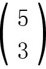
= 10种。最后，含有4个2的序列只有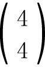
= 1种，即2222。比较这两个答案，就能得出令人满意的解释。一般而言，帕斯卡三角形的第n条对角线方向的数字之和，一定是一个斐波那契数列中的数字。具体地说，对于所有的n≥0，在求第n条对角线方向的数字之和（从第1项加到第n / 2项，以保证求和的行为限制在三角形范围之内）时，我们都会得到：
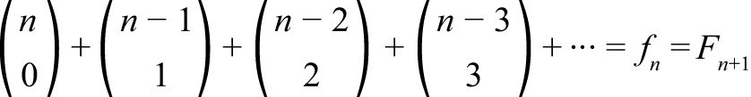
我们还可以通过拼图来理解斐波那契数列，这个方法的效果与前几种差不多，却更加直观。例如，f4 = 5表明，在利用方块（长度为1）和双方块（长度为2）拼成长度为4的长条时共有5种拼法。比如，1 + 1 + 2表示方块—方块—双方块的拼法。
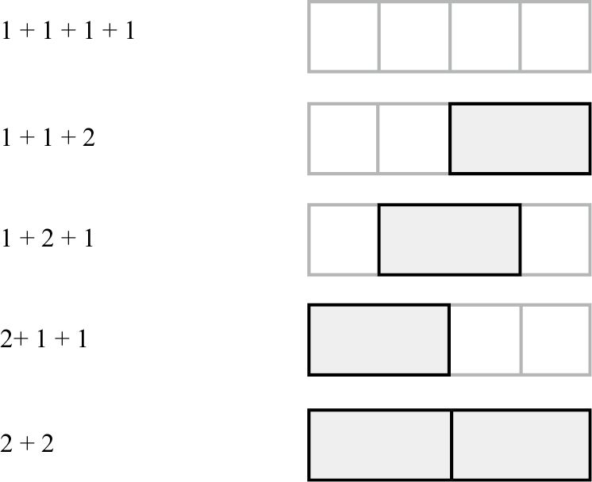
利用拼图法，我们还可以理解斐波那契数列的另一个重要规律。观察下表，找出斐波那契数列进行平方运算之后的规律。
把斐波那契数列中两个连续的数字相加，和为下一个数字，这个结果并不令人吃惊。（毕竟，斐波那契数列就是这样定义的。）但是，你绝对想不到它们的二次幂竟然也有一些非常有意思的规律。我们先把连续数字的二次幂相加，看看它们的和有什么规律。
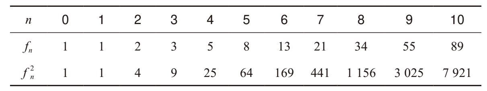
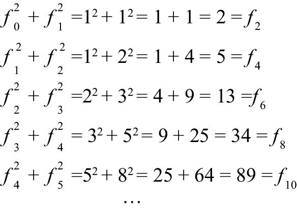
我们利用计数的方法来解释其中的规律。最后一个等式表明：
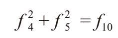
为什么会这样？通过一个简单的计数问题，我们就能理解其中的缘由。
问题：利用方块和双方块拼成长度为10的长条，共有多少种方法？
第一种方法：根据定义，有f10种拼法。下图所示是一种典型的拼法，即2 + 1 + 1 + 2 + 1 + 2 + 1。
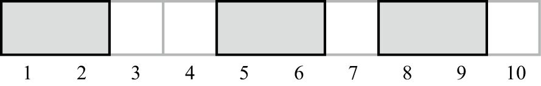
我们说这种拼法在第2、3、4、6、7、9和10单元处是可以拆分的。（也就是说，除了双方块的中间位置，其他地方都是可以拆分的。）而在第1、5、8单元处是不可拆分的。
第二种方法：我们分两种情况考虑，即在第5单元处可以拆分的拼图和在该处不可拆分的拼图。在第5单元处可以拆分、长度为10的拼图共有多少种呢？这样的拼图可以一分为二，前一半有f5 = 8种拼法，后一半也有f5 = 8种拼法。因此，根据第4章介绍的乘法法则，如下图所示，共有f 25 = 82 种拼法。
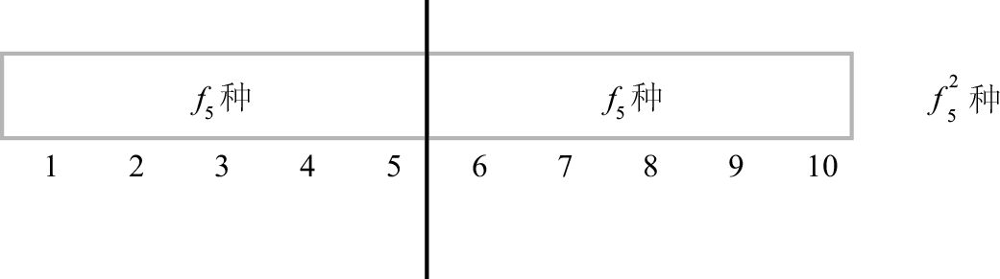
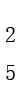
种长度为10且在第5单元处不可拆分的拼图有多少种？在这样的拼图中，第5、6单元必然是一个双方块，如下图所示。在这种情况下，左右两边各有f4 = 5种拼法，因此，在第5单元处不可拆分的长条共有f 24 = 52 种拼法。把这两种情况加总，就会得到 f10 =f 25 + f 24。证明完毕。
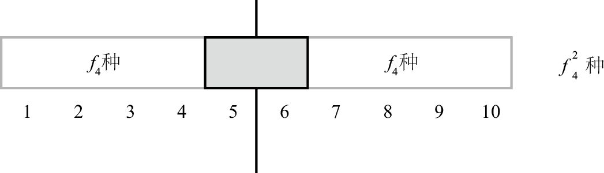
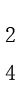
种一般而言，取长度为2n的拼图，考虑中间位置可以拆分与不可拆分的情况，就可以得出下面这个美观简练的规律：
f2n =f 2n + f 2n – 1
有了上面这个等式之后，我们可能希望推而广之，以便在类似情况下也可以使用它。例如，长度为m + n的拼图。在第m单元处可以拆分的拼图有多少种？左边有fm种拼法，右边有fn种拼法，因此共有fm fn种拼法。在第m单元处不可拆分的拼图有多少种呢？这种拼图的第m和m + 1单元必然是一个双方块，因此其余的位置有fm–1 fn–1种拼法。加到一起，就会得到下面这个非常有用的等式。对于m, n≥0：
fm+n = fm fn + fm – 1 fn – 1
接下来，我们介绍另一个规律。把斐波那契数列中数字的二次幂相加，观察和有什么特征。
12 + 12 = 2 = 1×2
12 + 12 + 22 = 6 = 2×3
12 + 12 + 22 + 32 = 15 = 3×5
12 + 12 + 22 + 32 + 52 = 40 = 5×8
12 + 12 + 22 + 32 + 52 + 82 = 104 = 8×13
…
哇，太棒了！斐波那契数列中数字的平方和，就是最后一个数字与下一个数字的乘积！为什么1、1、2、3、5、8的平方和等于8×13呢？用几何图形可以“看出”其中的奥秘。取边长分别是1、1、2、3、5、8的正方形，按下图所示的方式拼到一起。
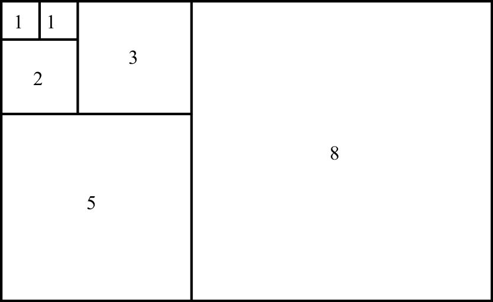
我们先放一个1×1的正方形，再在旁边放另一个1×1的正方形，就会得到一个1×2的长方形。在这个长方形的下面，放一个2×2的正方形，就会得到一个3×2的长方形。沿着长方形的长边，放一个3×3的正方形（得到一个3×5的长方形）。然后，在下面放置一个5×5的正方形（得到一个8×5的长方形）。最后，在旁边放置一个8×8的正方形，就会得到一个8×13的长方形。现在，我们考虑一个简单的问题。
问题：这个大长方形的面积是多少？
第一种方法：这个长方形的面积是所有正方形的面积之和。换句话说，大长方形的面积必然是12 + 12 + 22 + 32 + 52 + 82。
第二种方法：这个大长方形的高是8，底边长度为5 + 8 = 13，因此它的面积必然是8×13。
由于这两种方法都是正确的，所以算出的面积必然相等，上面的等式得以证明。事实上，回头去看这个大长方形的构建过程，你就会发现上面列出的关于这个规律的所有关系（例如，12 + 12 + 22 + 32 + 52 = 5×8）都已经得到了证明。沿着这个思路，你还可以构建大小为13×21、21×34…的长方形。由此可知，这个规律永远成立，其一般表达式为：
12 + 12 + 22 + 32 + 52 + 82 + … + F2n =Fn Fn+1
接下来，我们将斐波那契数列中与某个数字左右相邻的两个数字相乘，看看乘积有什么规律。例如，在斐波那契数列中，与5相邻的两个数字分别是3和8，乘积是3×8 = 24，比52小1；与8相邻的两个数字分别是5和13，乘积是5×13 = 65，比82大1。认真观察下表，很容易得出：在斐波那契数列中，与某个数字左右相邻的两个数字相乘，乘积与该数字的二次幂相差1。换句话说：
F2n – Fn–1 Fn+1 = ±1
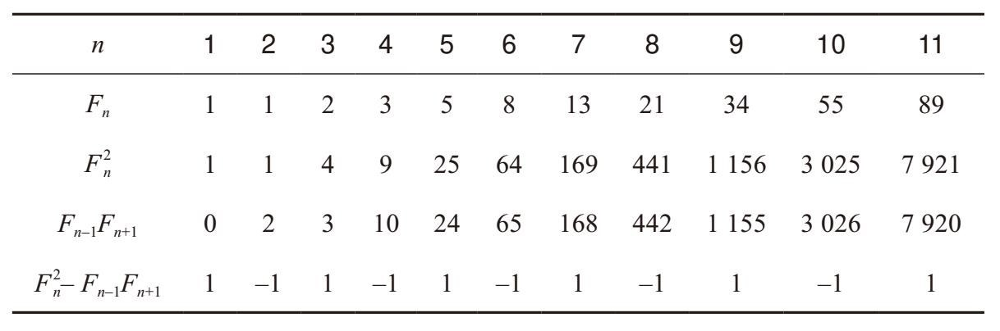
利用归纳法（一种证明方法，我们将在下一章学习这种方法）可以证明，对于n≥1：
F – Fn–1 Fn+1 = (–1)n+1
接下来，我们研究与某个数字距离较大的两个数字的乘积，以便把这个规律推而广之。以F5 = 5为例，我们发现，与之紧密相邻的两个斐波那契数字的乘积是3×8 = 24，与52相差1。与5相距2个数字的左右两数相乘时，也会得到相同的结果，即2×13 = 26同样与52相差1。与5相距3、4或5个数字的左右两数相乘呢？它们的乘积分别是1×21 = 21，1×34 = 34，0×55 = 0。这些乘积与25相差多少呢？它们的距离分别是4、9、25，都是完全平方数。而且，它们不是没有任何规律的完全平方数，而是斐波那契数列中数字的二次幂！下表给出了更多的证据，证明这个规律确实存在，其一般表达式为：
F2n – Fn–r Fn+r =± F2r
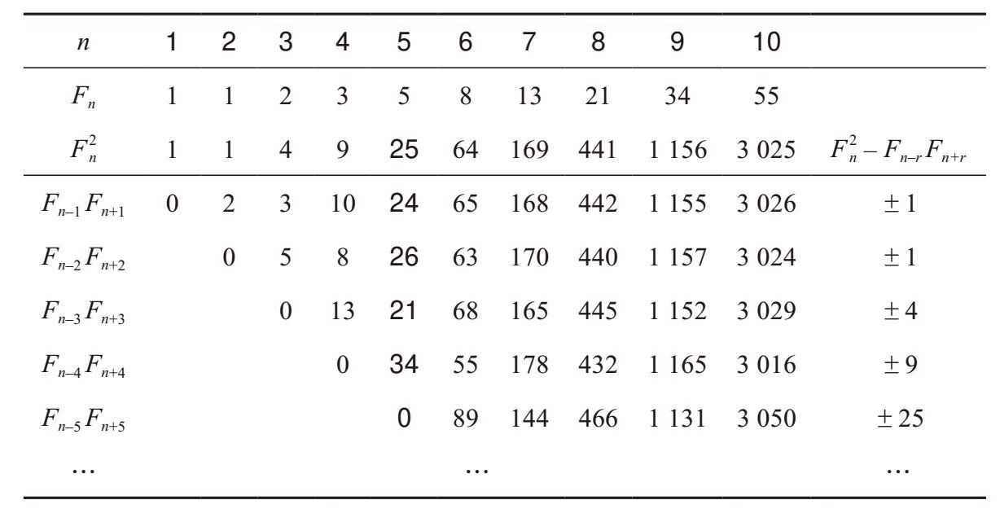